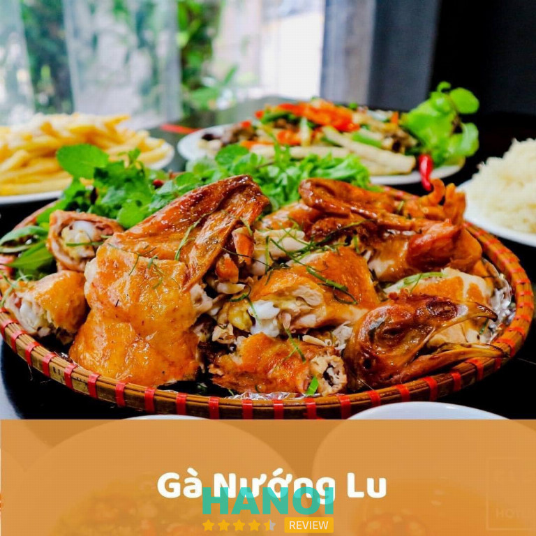
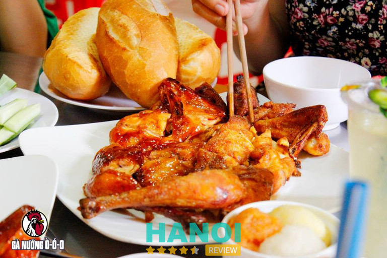
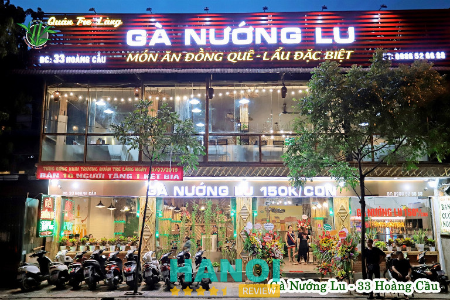
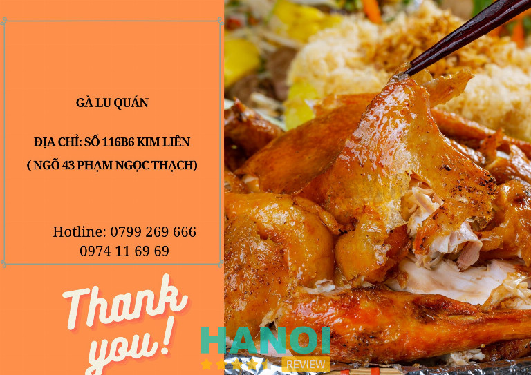
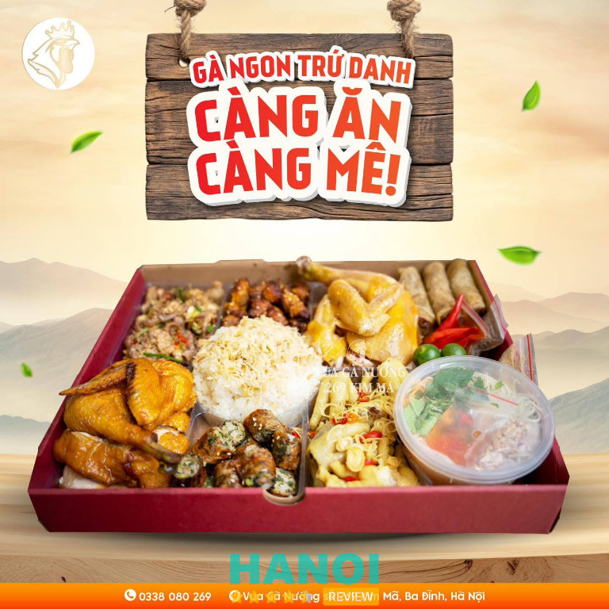
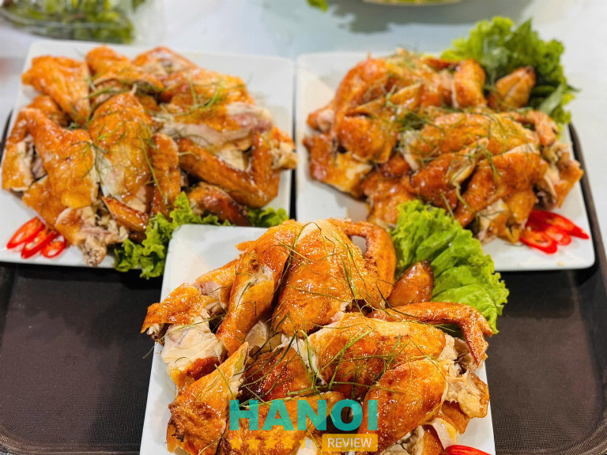
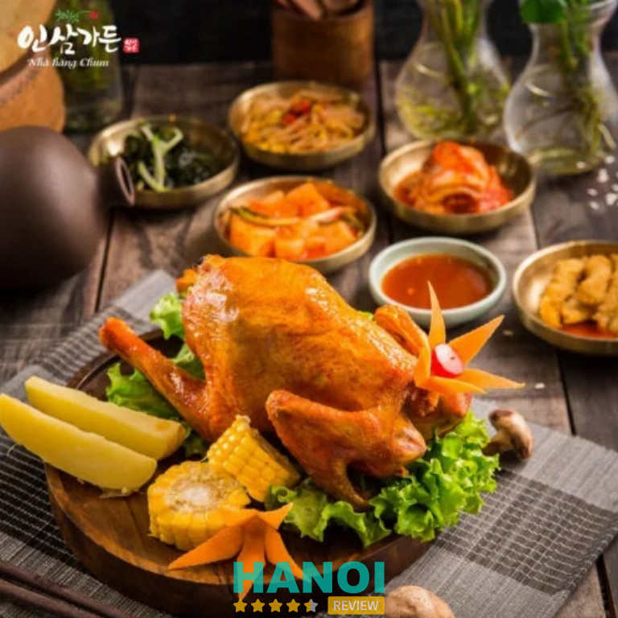
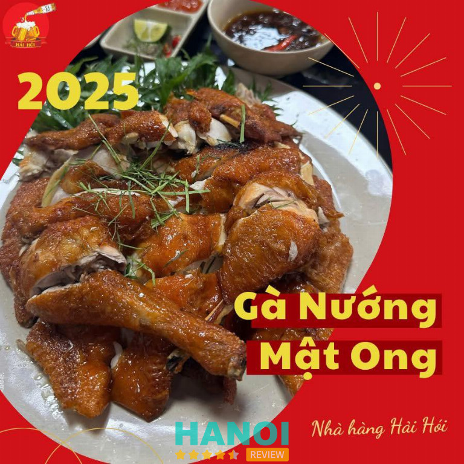
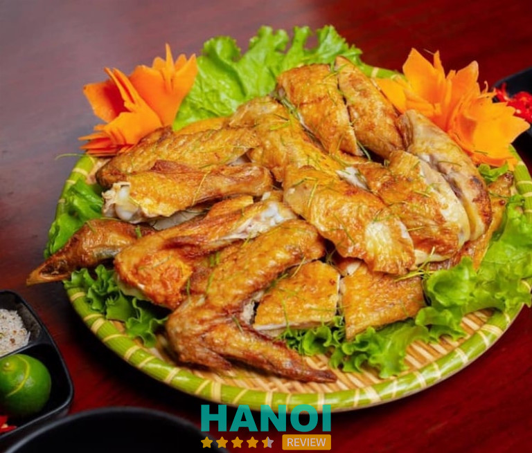

10 Quán gà nướng lu ở Hà Nội nên thử một lần
Nếu bạn đang tìm những quán ăn hấp dẫn cho những buổi tụ tập thì quán gà nướng lu ở Hà Nội là lựa chọn lý tưởng. Với hương thơm đậm đà, lớp da vàng giòn và thịt mềm ngọt tự nhiên, món ăn này chinh phục cả những thực khách khó tính. Nhiều địa chỉ tại Hà Nội hiện nay phục vụ gà nướng lu chuẩn vị, chất lượng và giá cả phải chăng.
Top 10 Quán gà nướng lu tại Hà Nội ngon chuẩn vị, giá hợp lý
Danh sách này tổng hợp những địa chỉ gà nướng lu ở Hà Nội được đánh giá cao nhờ hương vị đậm đà, không gian thoải mái và phục vụ chu đáo. Đây là gợi ý tuyệt vời cho người yêu ẩm thực.
Gà Nướng Lu – 26 Hàn Thuyên
Nằm tại vị trí trung tâm sầm uất của quận Hai Bà Trưng, Gà Nướng Lu 26 Hàn Thuyên là địa chỉ quen thuộc của người dân Hà Nội yêu thích ẩm thực truyền thống. Với không gian rộng rãi, sạch sẽ và phong cách phục vụ chuyên nghiệp, quán luôn nằm trong danh sách những nơi thưởng thức gà nướng lu ở Hà Nội được yêu thích nhất. Món gà nướng lu ở đây hấp dẫn ngay từ cái nhìn đầu tiên – da vàng óng, giòn rụm, hương thơm lan tỏa khắp không gian.

Điểm đặc biệt làm nên thương hiệu Gà Nướng Lu 26 Hàn Thuyên chính là công thức tẩm ướp độc đáo, kết hợp hài hòa giữa các loại gia vị truyền thống và kỹ thuật nướng lu đúng chuẩn. Thịt gà mềm, mọng nước, ngọt tự nhiên và không hề bị khô.
Bên cạnh món gà nướng lu trứ danh, thực khách còn có thể thưởng thức nhiều món ngon khác từ gà như:
- Lẩu gà nấm hương thơm dịu, thanh vị.
- Gà rang muối đậm đà, giòn tan.
- Lẩu gà dấm bỗng chua nhẹ, kích thích vị giác.
- Gà hấp hành giữ nguyên vị ngọt và mùi thơm tự nhiên.
Không gian quán thoáng mát, phù hợp cho bữa ăn gia đình, gặp gỡ bạn bè hay những buổi liên hoan cuối tuần. Đội ngũ nhân viên phục vụ tận tình, nhanh nhẹn, giúp khách hàng luôn cảm thấy thoải mái và hài lòng trong suốt bữa ăn.
Gà Nướng Lu 26 Hàn Thuyên là lựa chọn tuyệt vời để bạn thưởng thức gà nướng lu ở Hà Nội ngon chuẩn vị, tròn đầy hương sắc. Hãy đến và cảm nhận hương vị khó quên của món ăn truyền thống này.
Thông tin liên hệ:
- Địa chỉ: 26 Hàn Thuyên, Hai Bà Trưng, Hà Nội
- Điện thoại: 0988 942 728
- Facebook: fb.com/nguyenthetung.26hanthuyen
Vua Gà 34 – Đống Đa
Vua Gà 34 là chuỗi nhà hàng chuyên các món gà nổi tiếng tại Hà Nội, được nhiều thực khách lựa chọn khi muốn thưởng thức hương vị đặc trưng của gà nướng lu thảo mộc.
Nằm tại vị trí thuận lợi trên phố Trần Thái Tông, không gian rộng rãi, hiện đại, nơi đây phù hợp cho cả những buổi ăn gia đình, gặp gỡ bạn bè hay tiệc nhóm. Vua Gà 34 gây ấn tượng bởi phong cách chế biến độc đáo và hương vị đậm đà khó quên.
Điểm đặc biệt của Gà nướng lu thảo mộc nằm ở cách chọn nguyên liệu và kỹ thuật nướng:
- Gà thả vườn tươi ngon, thịt săn chắc.
- Tẩm ướp với các loại thảo mộc tự nhiên theo công thức riêng.
- Nướng trong lu đất truyền thống giúp giữ trọn vị ngọt, tạo lớp da vàng giòn, thơm nức mũi.
Ngoài món gà nướng lu, thực đơn tại Vua Gà 34 còn phong phú với nhiều lựa chọn hấp dẫn như Lẩu gà ớt hiểm, Gà không lối thoát, Gà nướng sốt me Thái, Cơm cháy gà xé, cùng nhiều món ăn kèm đặc sắc. Giá cả hợp lý, phục vụ nhanh nhẹn, thân thiện, luôn mang lại cảm giác hài lòng cho thực khách mỗi khi ghé thăm.
Nếu đang tìm kiếm địa chỉ thưởng thức Gà nướng lu thảo mộc chuẩn vị giữa lòng Hà Nội, Vua Gà 34 chính là lựa chọn đáng thử cho bữa ăn ấm cúng và trọn vị.
Thông tin liên hệ:
- Địa chỉ: 111D1 Đặng Văn Ngữ, Trung Tự, Đống Đa, Hà Nội
- Điện thoại: 0584 343 434
- Email: vuaga3434@gmail.com
- Website: vuaga34.vn
- Facebook: fb.com/vuaga34official
GỢI Ý: 10 Quán vịt quay ở Hà Nội ngon nhất, ăn là nhớ
Gà Nướng Ò Ó O – Hoàn Kiếm
Nằm tại trung tâm thành phố, Gà Nướng Ò Ó O là địa chỉ quen thuộc khi nhắc đến gà nướng lu ở Hà Nội. Quán gây ấn tượng với không gian ấm cúng, phục vụ nhanh nhẹn và chất lượng món ăn luôn giữ vững phong độ. Dù có nhiều chi nhánh trên địa bàn, cơ sở Hà Hồi vẫn được yêu thích nhất nhờ vị trí thuận tiện và hương vị đặc trưng khó quên.

Gà được tẩm ướp theo công thức riêng, sau đó nướng chín trong lu đất giúp thịt thơm, da giòn nhẹ mà không bị khô. Mỗi phần gà được phục vụ kèm nhiều loại sốt chấm hấp dẫn, mang đến trải nghiệm ẩm thực đầy đủ hương – sắc – vị. Đặc biệt, phần sốt tiêu xanh và sốt cay tỏi là hai lựa chọn được thực khách gọi nhiều nhất.
Một số món được yêu thích tại quán:
- Gà nướng lu truyền thống
- Gà nướng sốt tiêu xanh
- Gà nướng cay tỏi
- Cơm gà và xôi gà nướng lu
- Salad trộn và đồ uống tươi mát ăn kèm
Ngoài hương vị đặc sắc, Gà Nướng Ò Ó O còn gây thiện cảm bởi cách phục vụ tận tình và không gian sạch sẽ, phù hợp cho bữa ăn gia đình hay tụ tập bạn bè. Dù giá có phần cao hơn so với một số quán khác, chất lượng món ăn và sự chỉn chu trong từng chi tiết khiến thực khách luôn hài lòng.
Gà Nướng Ò Ó O Hà Hồi xứng đáng là điểm đến lý tưởng cho ai đang tìm kiếm gà nướng lu ở Hà Nội chuẩn vị, thơm ngon và chất lượng.
Thông tin liên hệ:
- Địa chỉ: Số 26 xóm Hà Hồi, Trần Hưng Đạo, Hoàn Kiếm, Hà Nội
- Điện thọa: 0347 307 792
- Facebook: fb.com/ganuongooohanoi
Quán Tre Làng – Đống Đa
Tre Làng – Gà Nướng Lu Hoàng Cầu là địa điểm ẩm thực nổi bật được nhiều người yêu thích khi muốn thưởng thức món gà nướng lu chuẩn vị ngay giữa lòng Hà Nội.
Nằm ngay mặt đường Hoàng Cầu dễ tìm, quán gây ấn tượng với hương vị đặc trưng, không gian gần gũi và phong cách phục vụ nhanh nhẹn, thân thiện. Gà được chọn lọc kỹ, tẩm ướp theo công thức riêng, mang đến trải nghiệm ẩm thực đậm đà và khác biệt.

Món gà nướng lu tại Tre Làng nổi tiếng nhờ cách chế biến độc đáo – gà được nướng trong lu đất giúp giữ được độ ngọt và mềm của thịt, trong khi lớp da ngoài vàng giòn, dậy hương thơm hấp dẫn. Thịt gà không bị khô, gia vị thấm đều từ trong ra ngoài, phù hợp khẩu vị nhiều thực khách. Ngoài ra, quán còn có thực đơn phong phú đi kèm, giúp bữa ăn thêm phần trọn vị.
Một số món được ưa chuộng tại Tre Làng:
- Gà nướng lu nguyên con hoặc nửa con
- Xôi ăn kèm gà nướng
- Rau luộc, dưa góp, nước chấm đặc biệt
- Nước uống giải khát tươi mát
Không gian quán tuy không quá rộng nhưng được sắp xếp gọn gàng, sạch sẽ, mang đến cảm giác thoải mái khi dùng bữa. Tre Làng – Gà Nướng Lu Hoàng Cầu là điểm đến lý tưởng cho những ai muốn thưởng thức gà nướng lu ngon mà không cần di chuyển xa.
Tre Làng – Gà Nướng Lu Hoàng Cầu luôn là lựa chọn đáng tin cậy cho các tín đồ ẩm thực Hà thành. Hãy đến và cảm nhận hương vị gà nướng lu thơm ngon, chuẩn vị Việt.
Thông tin liên hệ:
- Địa chỉ: 117 Ô Chợ Dừa, Đống Đa, Hà Nội
- Điện thoại: 0986 526 688
- Email: ducbiiiii@gmail.com
- Facebook: fb.com/GaNuongLu.117OChoDua
Gà Lu Quán – 116B6 Kim Liên
Nằm trong khu ẩm thực sầm uất bậc nhất Hà Nội, Gà Lu Quán là địa chỉ quen thuộc của những tín đồ mê món gà nướng lu đậm vị. Quán gây ấn tượng bởi hương vị riêng biệt khó trộn lẫn, không gian thân thiện và phong cách phục vụ nhanh nhẹn, gần gũi.
Nhờ sử dụng nguyên liệu tươi ngon và cách chế biến truyền thống trong lu nướng kín, hương vị món gà tại đây luôn giữ được sự mềm ngọt tự nhiên, đồng thời lan tỏa mùi thơm hấp dẫn khiến thực khách khó cưỡng.

Gà nướng lu là món nổi bật nhất của quán, với lớp da vàng ruộm giòn rụm, phần thịt thấm đều ngũ vị hương và lá chanh, tạo nên sự hòa quyện hoàn hảo giữa mùi thơm và vị đậm đà. Gà được chọn từ gà thả vườn khỏe mạnh, nướng vừa lửa giúp thịt chín tới mà không bị khô.
Bên cạnh đó, thực đơn đa dạng mang đến nhiều lựa chọn cho thực khách:
- Xôi chiên giòn vàng ruộm
- Su su xào thịt bò mềm thơm
- Gà hấp hành lá
- Cùng bia cắp nách chuẩn vị cho những buổi tụ họp vui vẻ
Không gian quán được thiết kế mở, có khu vực bàn trong nhà ấm cúng và khu bàn ngoài trời thoáng mát, rất phù hợp cho các buổi gặp gỡ bạn bè, liên hoan hay tiệc gia đình. Giá cả tại Gà Lu Quán cũng ở mức dễ chịu, phù hợp với nhiều nhóm khách khác nhau.
Gà Lu Quán – điểm đến lý tưởng cho những ai muốn thưởng thức gà nướng lu Hà Nội đúng vị. Hương vị nướng thơm nồng, không gian thoải mái và thực đơn phong phú chắc chắn sẽ mang lại trải nghiệm ẩm thực đáng nhớ.
Thông tin liên hệ:
- Địa chỉ: 116B6 Kim Liên, Ngõ 43 Phạm Ngọc Thạch, Đống Đa, Hà Nội
- Điện thoại: 0799 269 666
- Email: quyenboha010496@gmail.com
- Facebook: fb.com/AmThucGaLuQuan
THAM KHẢO: 10 Quán bia hơi tại Hà Nội nổi tiếng nhất, phù hợp để lai rai
Vua Gà Nướng – 269 Kim Mã
Vua Gà Nướng 269 Kim Mã là địa điểm quen thuộc của những người yêu ẩm thực Việt, đặc biệt là món gà nướng lu đậm đà hương vị truyền thống.
Nằm trên trục đường sầm uất, quán thu hút thực khách bởi không gian rộng rãi, sạch sẽ cùng mùi thơm hấp dẫn lan tỏa từ khu bếp nướng. Từng con gà tươi được chọn lọc kỹ càng, tẩm ướp theo công thức riêng biệt giúp giữ nguyên vị ngọt tự nhiên mà vẫn thấm đều gia vị đặc trưng.

Điểm nổi bật của Vua Gà Nướng nằm ở cách chế biến độc đáo – nướng trong lu đất. Nhờ quá trình nướng chậm và nhiệt độ ổn định, phần da gà vàng óng, giòn tan, trong khi thịt bên trong vẫn mềm ẩm và dậy mùi thơm quyến rũ.
Thực đơn phong phú với nhiều lựa chọn hấp dẫn như:
- Gà nướng lu nguyên con
- Gà nướng muối ớt, gà nướng mật ong
- Các món lẩu, salad, rau rừng ăn kèm
- Đồ uống và món ăn chơi đặc sắc
Không chỉ thu hút bởi món gà nướng, quán còn gây ấn tượng nhờ phong cách phục vụ nhanh nhẹn, không gian thoáng mát và giá cả hợp lý. Đây là điểm hẹn lý tưởng cho các buổi tụ họp bạn bè, gia đình hay liên hoan công ty.
Vua Gà Nướng – 269 Kim Mã luôn là địa chỉ đáng tin cậy cho những ai muốn thưởng thức gà nướng lu thơm ngon, đúng vị ngay giữa lòng Hà Nội.
Thông tin liên hệ:
- Địa chỉ: 269 Kim Mã, Giảng Võ, Ba Đình, Hà Nội
- Điện thoại: 0338 080 269
- Email: vuaganuong@gmail.com
- Website: vuaganuong.vn
- Facebook: fb.com/vuaganuong269
Nhà Hàng Thế Giới Gà – Bắc Từ Liêm
Nhà Hàng Thế Giới Gà là địa chỉ quen thuộc của những tín đồ ẩm thực yêu thích các món ăn chế biến từ gà. Nằm trên trục quận Bắc Từ Liêm sầm uất, nhà hàng nổi bật với không gian rộng rãi, thoáng mát và phong cách phục vụ chuyên nghiệp.
Thế Giới Gà được biết đến là nơi mang đến trải nghiệm ẩm thực phong phú với nhiều món ngon hấp dẫn, đặc biệt là gà nướng lu – món ăn được thực khách nhắc đến nhiều nhất khi ghé thăm.

Gà nướng lu tại Thế Giới Gà được chế biến từ những con gà tươi ngon, có nguồn gốc rõ ràng. Từng miếng thịt gà được tẩm ướp theo công thức riêng với các loại gia vị thiên nhiên, sau đó nướng trong lu kín để giữ trọn vị ngọt và mùi thơm đặc trưng. Món ăn sau khi hoàn thiện có lớp da vàng ruộm, giòn tan, phần thịt bên trong săn chắc mà vẫn mềm mọng, tạo nên hương vị khó quên.
Một số món ăn đặc sắc khác được nhiều thực khách yêu thích gồm:
- Gà hấp lá chanh, gà rang muối, gà quay mật ong
- Lẩu gà thuốc bắc, gà tiềm ớt hiểm, cháo gà thơm béo
- Các món ăn kèm hấp dẫn như nộm gà xé phay, xôi gà, gỏi gà hoa chuối
Không chỉ nổi bật bởi thực đơn đa dạng, Nhà Hàng Thế Giới Gà còn ghi điểm nhờ đội ngũ nhân viên phục vụ nhanh nhẹn, thân thiện cùng không gian ấm cúng, phù hợp cho bữa ăn gia đình, họp mặt bạn bè hay liên hoan công ty. Nhà Hàng Thế Giới Gà – điểm đến lý tưởng cho những ai muốn thưởng thức gà nướng lu và các món ngon từ gà chất lượng.
Thông tin liên hệ:
- Địa chỉ: Số nhà 33 TT1 Đường số 2 Thành Phố Giao lưu, Cổ nhuế 1, Bắc Từ Liêm, Hà Nội
- Điện thoại: 0338 490 496
- Email: thegioiga33@gmail.com
- Facebook: fb.com/nhahangthegioigabactuliem
Nhà hàng Chum – Thanh Xuân
Chum Restaurant là địa điểm ẩm thực nổi bật tại trung tâm Hà Nội, nơi quy tụ tinh hoa của các món ăn Hàn Quốc. Nổi bật nhất trong thực đơn là gà nướng lu – món ăn được chế biến công phu, mang đậm phong vị dân dã mà vẫn sang trọng. Với không gian ấm cúng, bài trí tinh tế và phong cách phục vụ chuyên nghiệp, nhà hàng là lựa chọn lý tưởng cho các bữa tiệc gia đình, gặp gỡ bạn bè hay tiếp đãi đối tác.

Gà nướng lu tại Chum Restaurant được chọn từ gà ta thả vườn, tươi ngon mỗi ngày. Quá trình tẩm ướp sử dụng công thức độc quyền với hơn 10 loại gia vị tự nhiên. Gà được nướng trong lu đất truyền thống, giữ trọn hương vị, da vàng giòn rụm và thịt mềm ngọt. Mỗi phần gà đều được phục vụ kèm muối chanh ớt hoặc nước chấm đặc biệt, tạo nên trải nghiệm ẩm thực khó quên.
Một số điểm hấp dẫn của món gà nướng lu Chum Restaurant:
- Hương vị đặc trưng, đậm đà, thơm nức.
- Nguồn nguyên liệu tươi sạch, chọn lọc kỹ lưỡng.
- Cách nướng truyền thống giúp giữ trọn vị tự nhiên.
- Không gian thưởng thức sang trọng, tinh tế.
Bên cạnh món gà nướng lu trứ danh, thực khách còn có thể thưởng thức nhiều món ăn hấp dẫn khác như cá nướng, sườn nướng, lẩu và các món đặc sản vùng miền. Chum Restaurant khẳng định vị thế là một trong những điểm đến ẩm thực đáng tin cậy tại Hà Nội, nơi mỗi bữa ăn đều là một trải nghiệm đáng nhớ. Hãy ghé thăm và thưởng thức gà nướng lu chuẩn vị ngay hôm nay.
Thông tin liên hệ:
- Địa chỉ: B34, Ngõ 70 Nguyễn Thị Định, Thanh Xuân, Hà Nội
- Điện thoại: 024 6251 0099
- Emal: nhahangchum@gmail.com
- Website: chumrestaurant.com
- Facebook: fb.com/nhahangchum
Nhà hàng Bia Hải Hói – Thanh Xuân
Tọa lạc ngay trung tâm quận Thanh Xuân, Bia Hải Hỏi là địa điểm quen thuộc của nhiều tín đồ ẩm thực yêu thích gà nướng lu – món ăn mang hương vị truyền thống được chế biến theo phong cách dân dã nhưng đầy tinh tế. Quán nổi bật với không gian rộng rãi, phong cách phục vụ thân thiện và thực đơn phong phú, mang đến trải nghiệm ẩm thực đặc trưng của Hà Nội.

Gà nướng lu tại Bia Hải Hỏi gây ấn tượng nhờ công thức tẩm ướp riêng, nướng trong lu kín giúp thịt gà giữ được độ mềm, mọng nước mà vẫn có lớp da vàng giòn hấp dẫn. Mỗi phần gà được chọn lọc kỹ lưỡng, nướng chín đều, dậy mùi thơm lừng, kết hợp với nước chấm độc quyền khiến thực khách khó quên ngay từ lần đầu thưởng thức.
Bên cạnh món gà nướng lu trứ danh, quán còn phục vụ:
- Các món nhậu dân dã: lòng nướng, sụn nướng, cá nướng riềng mẻ
- Đồ ăn kèm hấp dẫn: khoai chiên, dưa chuột muối, rau sống sạch
- Các loại bia tươi, bia chai hảo hạng phục vụ theo phong cách quán bia truyền thống
Giá cả tại Bia Hải Hỏi phù hợp với mọi đối tượng, từ nhóm bạn trẻ đến gia đình hoặc dân văn phòng. Không chỉ là nơi để thưởng thức gà nướng lu Hà Nội, quán còn là điểm hẹn lý tưởng để tụ tập, trò chuyện và thư giãn sau giờ làm việc.
Bia Hải Hỏi xứng đáng là một trong những địa chỉ gà nướng lu nổi tiếng tại Hà Nội – nơi hội tụ hương vị chân thực và tinh tế. Ghé ngay để cảm nhận trọn vẹn vị ngon đậm đà của món gà nướng lu đúng điệu.
Thông tin liên hệ:
- Địa chỉ: 99A Phố Ngụy Như Kon Tum, Nhân Chính, Thanh Xuân, Hà Nội
- Điện thoại: 0977 932 338
- Email: Tux.shikito93@gmail.com
- Website: biahaihoi.vn
- Facebook: fb.com/biahoihaihoi99anguyngukomtum
THAM KHẢO: 10 Khách sạn tình yêu tại Hà Nội lý tưởng cho cặp đôi
Gà Tươi Mạch Hoạch – Hà Đông
Gà Tươi Mạnh Hoạch là thương hiệu quen thuộc khi nhắc đến quán gà nướng lu ở Hà Nội, nổi bật với nguồn gà ta tươi ngon chính gốc Hải Dương và phong cách chế biến đậm chất truyền thống. Với nhiều năm kinh nghiệm trong lĩnh vực ẩm thực, thương hiệu này đã trở thành điểm đến tin cậy của người yêu các món gà dân dã nhưng vẫn sang trọng và hấp dẫn.

Món gà nướng lu tại đây là sự kết hợp giữa chất lượng nguyên liệu thượng hạng và bí quyết nướng lu đặc trưng, giúp thịt gà chín đều, da vàng giòn, thơm lừng. Mỗi con gà được lựa chọn kỹ càng, là gà ta thả vườn, thịt săn chắc, ngọt tự nhiên và được tẩm ướp theo công thức riêng biệt, mang lại hương vị đậm đà khó quên.
Một số điểm đặc biệt thu hút thực khách:
- Gà ta tươi 100%, chế biến ngay trong ngày.
- Da gà giòn dai, thịt mềm ngọt tự nhiên.
- Nước chấm pha chế độc quyền, ăn kèm xôi chiên hoặc dưa góp.
- Không gian quán sạch sẽ, phục vụ nhanh chóng và thân thiện.
Không chỉ có món gà nướng lu, hệ thống Gà Tươi Mạnh Hoạch còn phục vụ đa dạng món gà như gà rang muối, gà hấp lá chanh, gà không lối thoát… Tất cả đều giữ trọn hương vị đặc trưng của gà ta thả vườn. Nếu đang tìm quán gà nướng lu ở Hà Nội vừa chất lượng, vừa đúng chuẩn vị Bắc, Gà Tươi Mạnh Hoạch chắc chắn là lựa chọn đáng tin cậy.
Thông tin liên hệ:
- Địa chỉ: 70 Nguyễn Văn Lộc, Mỗ Lao, Hà Đông, Hà Nội
- Điện thoại: 0985 715 338
- Email: gamanhhoachvn@gmail.com
- Website: manhhoach.com
- Facebook: fb.com/gamanhhoachvn
Tiêu chí chọn quán gà nướng lu ở Hà Nội ngon chuẩn vị
Để chọn được quán gà nướng lu ở Hà Nội thật ngon, bạn nên chú ý đến nhiều yếu tố quan trọng giúp đảm bảo chất lượng món ăn và trải nghiệm ẩm thực. Các vấn đề cần lưu ý bao gồm:
- Nguyên liệu tươi ngon: Gà phải được chọn kỹ, đảm bảo thịt săn chắc, không dùng gà đông lạnh để giữ vị ngọt tự nhiên.
- Cách ướp gia vị: Hương vị đặc trưng đến từ công thức tẩm ướp bí truyền, đậm đà nhưng vẫn giữ nguyên vị gà.
- Phương pháp nướng lu: Gà được nướng trong lu đất giúp giữ nhiệt đều, làm da giòn và thịt mềm mọng nước.
- Không gian quán sạch sẽ: Môi trường ăn uống sạch sẽ, thoáng mát tạo cảm giác thoải mái cho thực khách.
- Giá cả hợp lý: Mức giá cần phù hợp chất lượng món ăn, minh bạch và rõ ràng trong menu.
- Phục vụ chuyên nghiệp: Nhân viên nhanh nhẹn, thân thiện và sẵn sàng hỗ trợ khách hàng khi cần thiết.
- Đánh giá khách hàng tốt: Quán có nhiều phản hồi tích cực trên mạng xã hội và nền tảng đánh giá ẩm thực.
Với hương vị đặc trưng và cách chế biến cầu kỳ, các quán gà nướng lu ở Hà Nội không chỉ là món ăn ngon mà còn là trải nghiệm ẩm thực khó quên. Dù bạn chọn quán bình dân hay cao cấp, chắc chắn sẽ cảm nhận được sự tinh tế trong từng miếng thịt. Hãy thử ngay để khám phá hương vị hấp dẫn này cùng người thân và bạn bè.
Có thể bạn quan tâm
- 10 Quán chả cá Lã Vọng ở Hà Nội ngon chuẩn vị, phục vụ nhanh
- 10 Quán bún cá ngon nổi tiếng tại Hà Nội lâu đời nhất
- 7 Nhà hàng Huế ở Hà Nội đậm chất Cố Đô
- 5 Quán bún riêu tại Hà Nội thơm ngon đậm đà, lưu ngay để thử
DOANH NGHIỆP: Đăng tải thông tin MIỄN PHÍ.
Tin đọc nhiều


Trở thành người đầu tiên bình luận cho bài viết này!